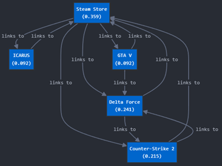

-
שאלה 1: טכנולוגיות שונות בפרויקט
רשמו טכנולוגיות שונות מעניינות שהשתמשתם בהם בפרויקט.
בפרויקט שלנו השתמשנו בשלוש טכנולוגיות מרכזיות אשר תרמו משמעותית לשיפור איכות ומהירות החיפוש:
- Multithreading Search: טכנולוגיה זו מאפשרת ביצוע חיפושים מרובים במקביל באמצעות חלוקת המשימות בין מספר תהליכונים (threads). כך, מתקצר זמן העיבוד הכולל ומשתפרת היעילות של מנוע החיפוש, במיוחד עבור שאילתות מורכבות או מסדי נתונים גדולים.
- Phrase Handling Search: יישמנו טכניקה שמאפשרת זיהוי והתמודדות עם ביטויים מורכבים במהלך החיפוש. הדבר מאפשר למנוע החיפוש להחזיר תוצאות מדויקות יותר כאשר המשתמשים מחפשים ביטויים מרובי מילים או מונחים מחוברים.
- Synonyms Recognition: שילבנו מערכת לזיהוי מילים נרדפות (סינונימים) כדי להרחיב את טווח התוצאות הרלוונטיות. טכנולוגיה זו מסייעת למנוע החיפוש להבין כוונות משתמשים גם כאשר הם מבטאים את חיפושיהם בדרכים שונות או משתמשים במילים דומות עם משמעות דומה.
-
שאלה 2: זמני ריצה של השאילתות
כמה זמן רצו השאילתות שלכם? במה זה תלוי? האם לדעתכם ניתן לשפר זמן זה?
ברוב המקרים, זמן הרצת השאילתות עמד על טווח של כמה מילישניות עד כמה מאות מילישניות, תלוי במורכבות השאילתה, גודל מאגר הנתונים ומספר התהליכונים (threads) שהוקצו.
שיפור זמני החיפוש אפשרי בכמה דרכים עיקריות:
- שימוש במטמון (Caching): שמירת תוצאות של שאילתות נפוצות.
- אופטימיזציה של אלגוריתם החיפוש: שימוש במבני נתונים מתקדמים.
- ניהול Multithreading יעיל: ניצול מיטבי של תהליכונים.
-
שאלה 3: Hubs ו-Authorities
האם בדפים שהוחזרו קיימים hubs? Authorities? נמקו.
בדפים שלנו יש Related Pages ו-Similar Pages, ולכן ניתן להסיק שהם כוללים Hubs ו-Authorities:
- Hubs: הדפים כוללים קישורים ל-Related Pages, אשר מפנים למקורות נוספים ורלוונטיים לנושא. בכך הם מתפקדים כמרכזים שמחברים למידע נוסף.
- Authorities: הדפים כוללים גם Similar Pages, המשקפים תוכן סמכותי שאוסף הפניות מדפים אחרים ומעיד על מהימנותם בנושאים ספציפיים.
-
שאלה 4: PageRank של הדפים
5 הדפים שהזחלן החזיר וחישוב ה-pagerank עבורם:
URL PageRank https://store.steampowered.com/ 0.359 https://store.steampowered.com/app/2507950/Delta_Force/ 0.241 https://store.steampowered.com/app/1149460/ICARUS/ 0.092 https://store.steampowered.com/app/730/CounterStrike_2/ 0.215 https://store.steampowered.com/app/271590/Grand_Theft_Auto_V/ 0.092 -
שאלה Relevance Feedback :5
Relevance Feedback ניתן על ידי שני סטודנטים אשר סיווגו את התוצאות הרלוונטיות של הזחלן בצורה הבאה:
# Page Student 1 Student 2 1 R R 2 R - 3 R R 4 - R 5 R - -
הערה: באישור מנועמי התאפשר לנו לעשות את חישוב ה-pagerank בשיטת hard coded כי היה לנו בעיה לחשב את ה-pagerank ב-steam כי הזחלן לא היה מוציא את הקישורים לדפים אחרים כמו הצורך.